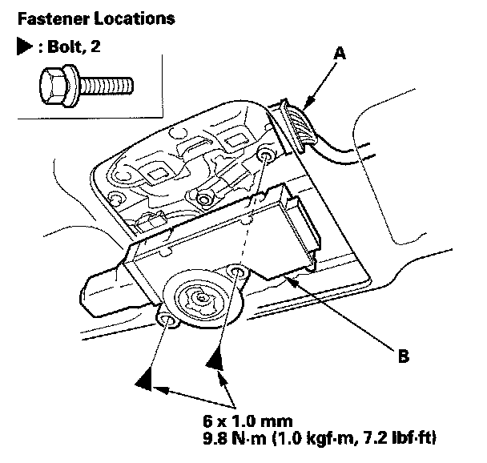

Sunroof / Moonroof Motor: Service and Repair
Motor Replacement1. Remove these items:
- Roof console
- Roof console bezel

2. Put on gloves to protect your hands. Disconnect the connector (A), and remove the bolts, then remove the motor (B).
3. Install the motor in the reverse order of removal, and note these items:
- Make sure the connector is plugged in properly.
- Reset the moonroof control unit.
- Check the motor operation.